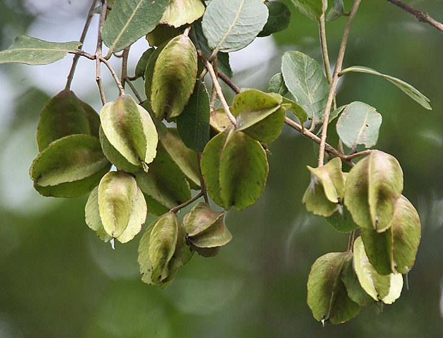

अर्जुनArjun Tree
Terminalia arjuna · Combretaceae · FLR-0020

- Scientific name
- Terminalia arjuna (Roxb.) Wight & Arn.
- Family
- Combretaceae
- Hindi
- अर्जुन / कोहा
- Status here
- native
- IUCN
- LC
When to look कब देखें
Present all year.
अर्जुन / Arjun Tree
Terminalia arjuna (Roxb.) Wight & Arn. — Combretaceae
अर्जुन पूर्वी उत्तर प्रदेश की नदियों का अभिभावक वृक्ष है। सरयू, राप्ती और घाघरा के किनारे यह विशाल पेड़ अपनी झुकी हुई शाखाओं के साथ मिलता है। इसकी छाल "अर्जुन की छाल" के नाम से आयुर्वेदिक दवाइयों की दुकानों में बिकती है — हृदय रोगों के लिए प्राचीन काल से उपयोग होती रही है।
Quick Identification त्वरित पहचान
| Feature | Description |
|---|---|
| Tree form | Large (20–25 m), spreading crown, distinctly drooping lower branches |
| Bark | Grey, smooth, exfoliating in thin curved flakes — diagnostic |
| Leaves | Sub-opposite, oblong-elliptic, 10–15 cm; two small glands at petiole base |
| Flowers | Small, cream-white, in axillary spikes (April–May) |
| Fruit | 5-winged drupe, 2.5–3.5 cm — the most diagnostic feature |
| Habitat clue | Almost always within metres of a river or perennial water body |
Field tip: The 5-winged woody fruit distinguishes it from all other riverbank trees. Fallen fruits are easy to find under the canopy October–December.
Morphology आकारिकी
| Feature | Measurement |
|---|---|
| Plant height | 20–25 m |
| Leaf length | 10–15 cm |
| Leaf width | 4–6 cm |
| Flower diameter | 3–4 mm |
| Fruit / seed dimensions | 2.5–3.5 cm (fruit length) |
Trunk: Massive, buttressed at the base in mature trees. Bark grey-white, smooth when young, peeling in thin curved flakes that reveal fresh pink-buff inner bark — this exfoliation is diagnostic.
Leaves: Arranged sub-oppositely, oblong-elliptic, 10–15 cm × 4–6 cm. Apex obtuse or rounded. Two small but distinct glands at the junction of petiole and blade — look carefully with a hand lens. Upper surface glabrous and glossy; lower paler.
Flowers: Individually tiny, cream to pale yellow, 5-petalled (petals absent, stamens give the fluffy look). Arranged in dense axillary spikes 5–8 cm long. Mildly fragrant. April–May, coinciding with early mango harvest.
Fruit: The unmistakable 5-angled, 5-winged drupe, 2.5–3.5 cm long, woody-fibrous, with five pronounced longitudinal wings running the length. Matures October–December; persists on the tree and falls dry. Not edible.
पत्तियाँ: 10–15 से.मी. लम्बी, डंठल के आधार पर दो छोटी ग्रन्थियाँ — लेंस से देखने पर दिखती हैं।
फल: पाँच पंखों वाला कड़ा फल — नदी किनारे गिरे फलों से तुरंत पहचान होती है।
Ecological Role पारिस्थितिक भूमिका
Riparian stabilizer: Arjun's deep taproot and extensive lateral root system binds riverbank soil, reducing erosion during monsoon floods. The Saryu and Rapti rivers in Basti district are lined with arjun groves that protect embankments.
Bird nesting: Large arjun trees provide stable nesting platforms. Indian Pond Heron (BRD-0004) and Sarus Crane (BRD-0002) are known to nest near arjun-dominated riparian corridors in eastern UP.
Larval host: In parts of eastern India, larvae of the Tassar silk moth (Antheraea paphia) feed on arjun leaves, producing Tassar silk — a lower-profile but ecologically significant relationship.
Tannin source: Bark is rich in tannins (10–12%) used in traditional leather tanning (chamra industries in UP).
पारिस्थितिकी: अर्जुन की जड़ें नदी के किनारे की मिट्टी पकड़ती हैं — बाढ़ नियंत्रण में महत्वपूर्ण। पेड़ पर बगुले और सारस नीड़ बनाते देखे गए हैं।
Life Cycle / Phenology जीवन चक्र
| Month | Event |
|---|---|
| Feb–Mar | New leaf flush; older leaves shed briefly |
| Apr–May | Flowering — cream spikes appear |
| Jun–Sep | Active growth during monsoon; roots absorb maximum moisture |
| Oct–Dec | Fruits ripen and fall; seed dispersal by water currents (hydrochory) |
| Year-round | Evergreen in sites with perennial water access |
Dispersal: The 5-winged fruits are carried downstream by river currents — a classic hydrochory adaptation. Wings provide buoyancy and slow rotation in water.
बीज फैलाव: पाँच पंखों वाले फल नदी की धारा में तैरकर दूर-दूर तक पहुँचते हैं — जलीय बीज-प्रकीर्णन का उत्कृष्ट उदाहरण।
Agricultural / Human Relevance कृषि एवं मानव उपयोग
Ayurvedic cardioprotection: Arjun bark is the most-studied tree in Ayurvedic cardiology. Active compounds include arjunolic acid, arjunetin, arjunine, and casuarinin. Clinical studies show positive inotropic (heart-strengthening) and antihypertensive effects. Mentioned in both Charaka Samhita and Sushruta Samhita.
"Arjun ki chhal" trade: Bark powder and decoctions are sold in every UP herbal medicine shop. The common preparation — bark boiled in milk ("arjun ksheerapaka") — is prescribed for angina and heart failure. The demand is high enough to cause bark over-stripping on wild trees.
Tanning: Bark tannins used in traditional leather processing. Less dominant now with synthetic tannins, but still practiced in Azamgarh and Jaunpur leather crafts.
Plantation value: The National Afforestation Programme and UP Forest Department promote arjun for riverbank restoration plantations.
दवाई: अर्जुन की छाल हृदय रोग के लिए सदियों से उपयोग होती है। "अर्जुन की छाल को दूध में उबालकर पीना" — यह नुस्खा ग्रामीण UP में आज भी प्रचलित है। लेकिन अत्यधिक छाल छीलने से पेड़ को नुकसान होता है।
Expected Locally स्थानीय रूप से अपेक्षित
Not a field record. Written from published accounts for eastern Uttar Pradesh. No confirmed local sighting yet — if you have seen it, that is what the atlas needs.
अभी तक स्थानीय पुष्टि नहीं। यह विवरण प्रकाशित स्रोतों से है, किसी अवलोकन से नहीं।
- Commonly seen on Saryu riverbanks between Basti and Ayodhya — large trees with buttressed roots extending into the water
- Bark stripping visible on many roadside arjun trees — evidence of ongoing medicinal use
- Winged fruits commonly found on riverbanks October–December; children collect them
- Large specimens near village tanks (तालाब) often serve as shade trees and community gathering spots
- Called "koha" in local Bhojpuri — some villagers do not connect this name with the Ayurvedic "arjun"
स्थानीय नाम: बस्ती-अयोध्या के बीच इसे "कोहा" कहते हैं — गाँव के लोग अक्सर नहीं जानते कि "अर्जुन की छाल" वाला पेड़ और "कोहा" एक ही है।
Distribution वितरण
Global range: Native to South Asia, primarily India, Bangladesh, and Sri Lanka; naturalized in other tropical regions.
In India: Widespread throughout central, western, and southern India, particularly along riverbanks and riparian tracts in the Indo-Gangetic plains and Deccan Peninsula.
In Uttar Pradesh: Common in most districts, particularly lining major river basins such as the Saryu, Ghaghara, Rapti, and Ganges.
In Basti district / eastern UP: Locally abundant along the banks of the Saryu and Rapti rivers and near large village ponds, where it is a key riparian component.
Range notes: No significant range changes documented; its range remains tied to water bodies and riparian zones.
Research Questions शोध प्रश्न
- Are earthworm densities higher in arjun rhizosphere soil compared to adjacent upland soil? (Root architecture may favour SFL species)
- Which specific bird species nest in arjun trees along the Saryu between Basti and Ayodhya, and at what density?
- How far do arjun fruits travel downstream before stranding? (hydrochory range)
- Is bark over-harvesting creating measurable stress (reduced leaf area, mortality) in wild arjun populations near roads?
- Do local healers distinguish between arjun and baheda bark — and is adulteration common in the "arjun ki chhal" trade?
Similar Species मिलती-जुलती प्रजातियाँ
| Species | How to distinguish |
|---|---|
| Terminalia bellerica (Baheda, बहेड़ा) | Fruit oval, not winged; leaves broader, clustered at tips |
| Terminalia chebula (Harad, हरड़) | Smaller tree; fruit 5-ribbed obovoid, not winged |
| Lagerstroemia speciosa (Pride of India) | Winged fruit but flowers bright purple, bark brown |
Taxonomy & Classification वर्गीकरण
Original description. Terminalia arjuna was first described by William Roxburgh in 1814 as Pentaptera arjuna in Hortus Bengalensis 34, and subsequently in 1832 in Flora Indica (2nd edition) 2: 438. It was transferred to the genus Terminalia by Robert Wight and George Arnott Walker-Arnott in 1834 in Prodromus Florae Peninsulae Indiae Orientalis 314. Type locality: India. The genus name Terminalia refers to the leaves being clustered at the ends (termini) of the branches.
Subspecies. Monotypic — no subspecies are currently recognised.
Family and order placement. Belongs to the order Myrtales, family Combretaceae. Combretaceae is a family of tropical trees and shrubs, including about 14 genera and 500 species, characterized by simple, entire leaves and winged or angled fruits.
Phylogenetic notes. Terminalia arjuna is closely nested within the section Pentaptera of the genus Terminalia. Molecular phylogenetic studies confirm its close relationship to other winged-fruited species of Terminalia such as Terminalia alata (asan).
IUCN status rationale. Classified as Least Concern (LC) by the IUCN Red List. It is a common and widely distributed species, faces no immediate threats of extinction, though wild populations along riparian corridors are impacted by habitat degradation and bark stripping.
Photo Gallery फ़ोटो गैलरी
No photos yet — photograph bark exfoliation, 5-winged fruits, riparian habit.
Atlas Connections संबंधित प्रजातियाँ
- Sarus Crane — nests in riparian habitat alongside arjun groves (BRD-0002)
- Indian Pond Heron — nests in large riverbank trees (BRD-0004)
- Indian Common Earthworm — soil enrichment in arjun rhizosphere (SFL-0002)
- Peepal — companion tree in riparian forest (FLR-0006)
- Banyan — co-occurs at village tank margins (FLR-0010)
References सन्दर्भ
- Wight, R. & Arnott, G.A. Walker-Arnott (1834). Prodromus Florae Peninsulae Indiae Orientalis, 314. Parbury, Allen & Co., London.
- Roxburgh, W. (1832). Flora Indica, Vol. 2: 438. W. Thacker & Co., Calcutta.
- Ram, A. et al. (2012). Terminalia arjuna — phytochemistry and pharmacological studies. Journal of Ethnopharmacology, 64(10): 1369–1383.
- Botanical Survey of India — Flora of Eastern Uttar Pradesh, Vol. III.
- Charaka Samhita — Chikitsa Sthana 26:32 (Arjuna in Hrid Roga).
- GBIF Occurrence Data — Terminalia arjuna, India (2026).
- Hooker, J.D. (1879). Flora of British India, Vol. II, p. 446. L. Reeve & Co., London.
Source file: species/flora/trees/arjun.md